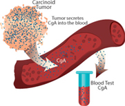
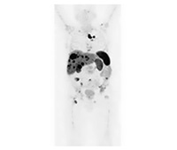

Diagnosis & Management of Carcinoid Syndrome
Carcinoid Syndrome Diagnosis
Doctors often have difficulty diagnosing carcinoid syndrome in its early stages. There are several reasons for this. Most of the symptoms are fairly common, and they are "nonspecific," meaning similar to symptoms that can be caused by many things.
For example, flushing can also be a menopausal symptom, a reaction to alcohol, or a side effect of a drug, while diarrhea is also present in a number of gastrointestinal (GI) tract diseases, such as irritable bowel syndrome (IBS), inflammatory bowel disease (IBD), and gastritis. Wheezing can be mistaken for asthma or other respiratory problems. Recognizing a pattern to the symptoms can be part of the process of considering the diagnosis of carcinoid syndrome.
That’s why it’s important to tell your doctor about all of the symptoms you experience, even if they don’t seem to be related to the symptom that is causing you concern.
An additional challenge is that carcinoid syndrome is a fairly rare condition. Your doctor might not have been looking for carcinoid syndrome when your symptoms first started.
There are several tests that your doctor can use to diagnose carcinoid syndrome and to monitor it once it has been diagnosed. It’s important to be monitored regularly for changes in your symptoms or test results. Regular doctor visits will also help you get the best possible outcome.
Tests that can help confirm a carcinoid syndrome diagnosis
Click each tab below to learn about how these tests are performed.
Biochemical Tests
Biochemical tests measure the levels of certain substances in your blood or urine. Your doctor may order biochemical tests to help determine whether or not you actually have a neuroendocrine tumor (NET) or to measure the amount of certain hormones.
Chromogranin A

The chromogranin A (CgA)* blood test is a good marker to help detect and monitor the activity of carcinoid tumors. This includes the tumors that release (secrete) the hormones that are associated with carcinoid syndrome. Elevated levels of CgA are found in 80% to 100% of patients with GI NET or lung NET.
A CgA test is an accurate measure of your CgA level. However, increased levels of this marker may also be caused by other factors, such as renal failure, chronic atrophic gastritis, or the use of proton-pump inhibitors.
You may continue to have this test, so your doctor can measure your CgA levels over time.
How the test is performed
A needle is inserted into your arm to take a sample of blood.
The sample is sent to a lab to be tested. Measurements may vary with meal consumption, so patients are required to fast before a CgA test. CgA tests are performed every 3 to 6 months.
*CgA is a protein found in carcinoid tumor cells, and it may be secreted into the blood. A blood sample is taken, and the level of CgA in the bloodstream is determined.
5-Hydroxyindoleacetic Acid Test
A 5-hydroxyindoleacetic acid (HIAA) test is a 24-hour urine test.
Your doctor may order a 5-HIAA test to measure the amount of serotonin in your blood. Serotonin is a hormone mostly made by cells found in the GI tract (digestive system) that helps with various bodily functions, such as digestion. Your doctor may order this test more than once to help watch for a neuroendocrine tumor that may cause carcinoid syndrome.
How the test is performed
You will urinate into a container over a 24-hour period.
After 24 hours, you will return the container to be tested.
Please note that some types of foods and medicines can increase the 5-HIAA detected in your urine, leading to misleading results. Ask your doctor for a complete list of foods and medicines that you should avoid before a 5-HIAA test.
Here are some foods to avoid:
-
Bananas
-
Avocados
-
Plums
-
Eggplants
-
Tomatoes
-
Plantains
-
Pineapples
-
Walnuts
And medicines with:
-
Guaifenesin (found in cough medicine)
-
Acetaminophen (Tylenol®)
-
Salicylates (found in aspirin)
-
L-DOPA (found in Parkinson disease medicine)
Tylenol is a registered trademark of McNeil Consumer Healthcare.
Imaging Tests
Imaging tests use specialized machines to look at your organs and tissues. These tests may help with diagnosis of neuroendrocrine tumors, or NET (the tumor causing the symptoms of carcinoid syndrome), or to find out whether the tumor has grown or changed.
Computed Tomography
A computed tomography (CT) scan shows the location and size of your tumor. Being scanned over time will help your doctor tell if your tumor has grown, changed, or spread.
How the test is performed
If your doctor orders your test with "contrast," you will either drink a fluid or receive an intravenous (IV) injection before the test. Contrast helps certain areas show up in the images. A CT scanner is shaped like a large doughnut standing on its side. You will lie on a table that slides you into the doughnut hole while the scanner takes pictures. You may also hear clicking or whirring noises. You may need to hold your breath to ensure the pictures are clear.
Magnetic Resonance Imaging
A magnetic resonance imaging (MRI) scan shows the difference between healthy tissue and a tumor. Being scanned over time will help your doctor tell if your tumor has grown, changed, or spread.
How the test is performed
If your doctor orders your test with "contrast," you will get an IV injection before the test. Contrast helps certain areas show up better in the images. During the test, you will lie on a table while the machine takes pictures. It may make clicking or beeping noises. You need to stay very still to ensure the images are clear.
Octreoscan™

An Octreoscan™ may help find a tumor that may not have been seen by other tests. Being scanned over time will help your doctor tell if your tumor has spread.
How the test is performed
Before the test, you will get an injection to place a "tracer" into your body. The tracer helps certain areas show up better in the images. You will lie on your back during the scan while the machine takes pictures. You can breathe normally and need to stay still to help ensure the images are clear.
Octreoscan is a trademark of Mallinckrodt Nuclear Medicine LLC.
Gallium Scan

A gallium scan is an imaging test that uses a small amount of a radioactive tracer to help find NET that may otherwise be missed.
How the test is performed
Before the test, your doctor will advise you to drink plenty of water to make sure that you are well hydrated. Then you will receive an IV infusion that contains the tracer solution. You will be instructed to lie still while your body is scanned by a positron emission tomography (PET) device.
After the scan is completed, you will be instructed to drink plenty of water and urinate frequently to flush the radioactive tracer out of your body.
Management of Carcinoid Syndrome
Goals of carcinoid syndrome treatment
When treating carcinoid syndrome, your doctor is most concerned with preserving your overall health and lifestyle. The goals of treatment are to remove the NET or reduce its size, and to help manage its impact on you. Your treatment may depend on the size of the tumor, whether or not it has spread, and where the tumor is located.
In addition to surgery, there are medical treatments that may be prescribed for carcinoid syndrome.
Your health care professional will want to discuss all of these points with you.
Monitoring of neuroendocrine tumors
In order to monitor disease progression, most people who are being treated for carcinoid syndrome need to have two different tests done on a regular basis. These tests measure CgA and 5-HIAA levels, and are typically repeated every 3 to 6 months.
In general, with both tests, results that show the numbers going down mean that your disease is under control.
-
CgA levels that are very high (up to 1000 times normal levels) may indicate that carcinoid tumors have spread
-
Elevated 5-HIAA levels may indicate carcinoid heart disease, which can be the end result of heart valvular damage
Keeping track of your test results and your symptoms
Keeping records of your CgA or 5-HIAA level (or both) over time can help you keep track of how well your treatment for carcinoid syndrome is working.
Keeping a diary of your symptoms—and your diet—can also be helpful, as recognizing and avoiding dietary triggers is an important part of managing carcinoid syndrome.
Take a 30-second test to help you identify symptoms of carcinoid syndrome.